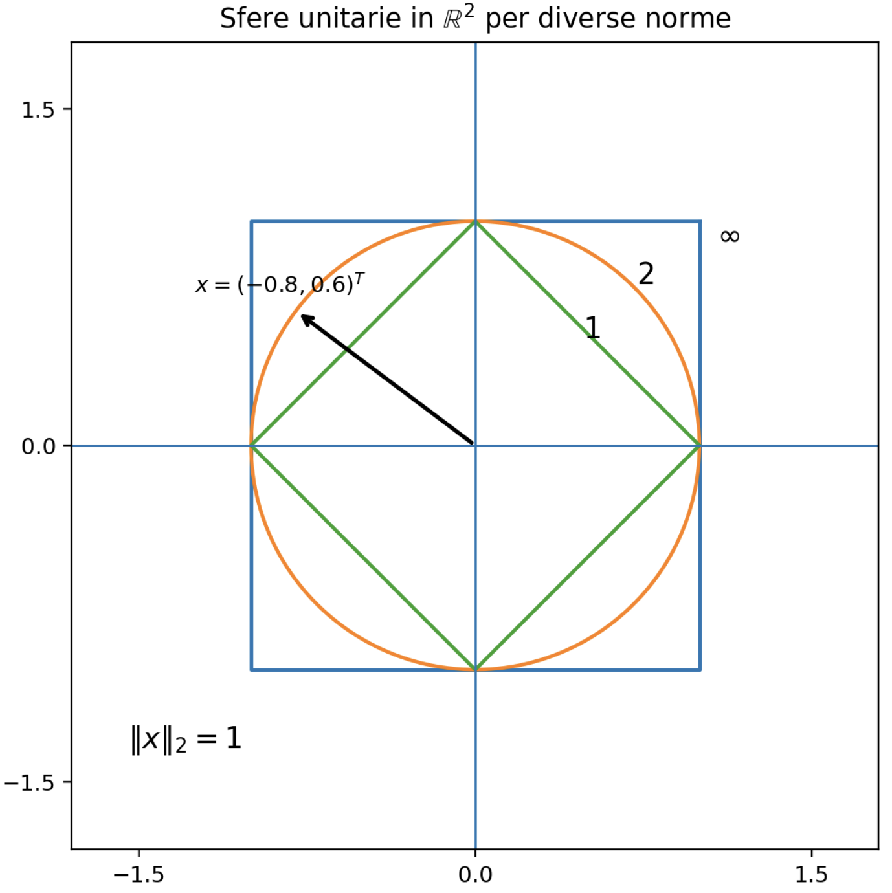
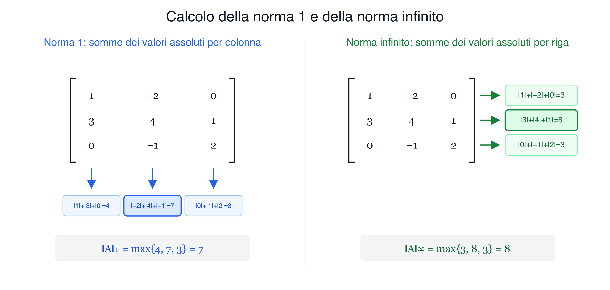
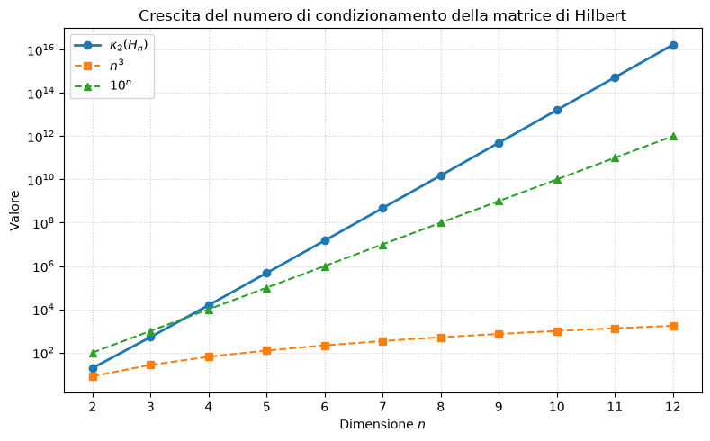
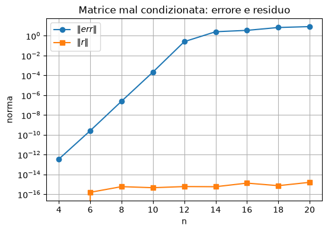
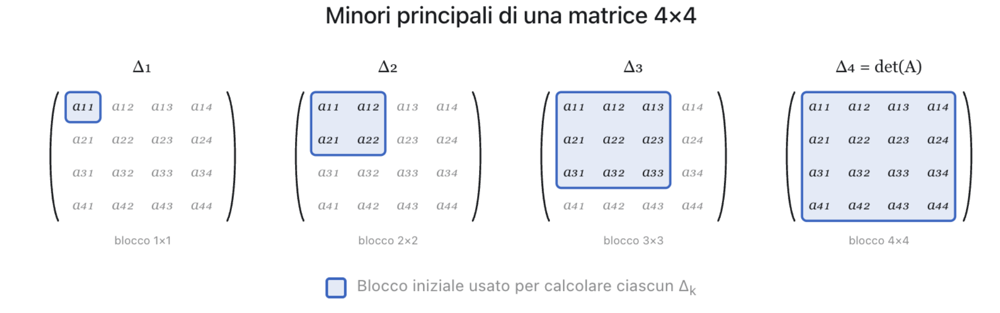
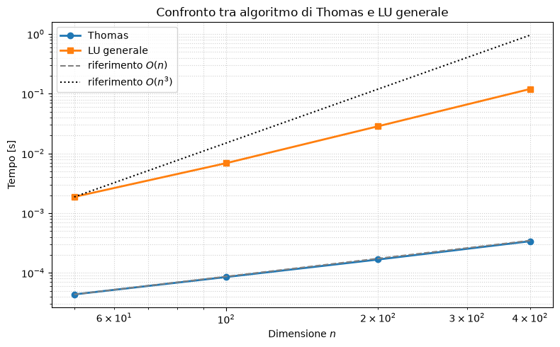

Sistemi lineari, condizionamento e metodi diretti#
Questo capitolo presenta alcuni metodi numerici per la risoluzione di sistemi lineari ed il concetto di condizionamento.
Argomenti:
il problema \(Ax=b\);
limiti della regola di Cramer;
perché evitare il calcolo esplicito dell’inversa;
norme vettoriali e matriciali;
errore assoluto e relativo;
condizionamento rispetto a perturbazioni su \(\mathbf{b}\);
condizionamento rispetto a perturbazioni su \(A\);
sistemi triangolari;
fattorizzazione LU;
eliminazione di Gauss;
pivoting parziale;
stabilità numerica;
algoritmo di Thomas;
fattorizzazione di Cholesky;
fattorizzazione QR;
trasformazioni di Householder;
esercizi ed esperimenti.
import numpy as np
import math
import time
np.set_printoptions(precision=6, suppress=True)
Parte I — Il problema \(A\mathbf{x}=\mathbf{b}\)#
1. Formulazione del problema#
Uno dei problemi più frequenti nel calcolo scientifico è la soluzione di un sistema lineare.
Un sistema lineare quadrato, cioè con tante equazioni quante incognite, si scrive in forma matriciale come
dove
La matrice \(A\) contiene i coefficienti, il vettore \(\mathbf{b}\) contiene i termini noti e \(\mathbf{x}\) è il vettore delle incognite.
Se \(A\) è non singolare, cioè invertibile, il sistema ha una e una sola soluzione.
Esempio elementare#
Consideriamo
In forma matriciale:
A = np.array([[2., 1.],
[1., 3.]])
b = np.array([1., 2.])
x = np.linalg.solve(A, b)
print("A =")
print(A)
print("b =", b)
print("Soluzione x =", x)
print("Verifica A @ x =", A @ x)
A =
[[2. 1.]
[1. 3.]]
b = [1. 2.]
Soluzione x = [0.2 0.6]
Verifica A @ x = [1. 2.]
Ma cosa c’è dietro al comando np.linalg.solve?
Matrici singolari e non singolari#
La frase precedente, “se \(A\) è non singolare”, merita di essere precisata.
Per una matrice quadrata \(A\in\mathbb{R}^{n\times n}\), le seguenti proprietà sono equivalenti:
\(A\) è non singolare;
esiste l’inversa \(A^{-1}\);
\(\det(A)\neq 0\);
\(\operatorname{rank}(A)=n\), cioè le colonne di \(A\) sono linearmente indipendenti;
per ogni vettore \(\mathbf{z}\neq 0\) si ha \(A\mathbf{z}\neq 0\);
se \(\lambda_i\) sono gli autovalori di \(A\), allora \(\lambda_i\neq 0\) per ogni \(i\) (si ricorda che \(\lambda_i\) è un autovalore di \(A\) se esiste un vettore non nullo \(\mathbf{v}_i\) tale che \(A\mathbf{v}_i=\lambda_i\mathbf{v}_i\)).
Queste caratterizzazioni dicono la stessa cosa da punti di vista diversi: algebraico, geometrico e spettrale.
Esistenza e unicità della soluzione#
L’esistenza e l’unicità della soluzione di
dipendono dal fatto che \(A\) sia singolare o non singolare. Nel caso non singolare il comportamento è semplice: per ogni termine noto \(\mathbf{b}\) esiste una e una sola soluzione.
Nel caso singolare, invece, bisogna guardare anche il vettore \(b\).
Indichiamo con \(R(A)\) l’insieme di tutti i vettori che si possono ottenere come combinazione lineare delle colonne di \(A\):
dove \(\mathbf{a}_i\) è la \(i\)-esima colonna di \(A\). Questo insieme si chiama range o spazio colonnare di \(A\).
Il sistema \(A\mathbf{x}=\mathbf{b}\) è compatibile se e solo se
cioè se \(b\) può essere scritto come combinazione lineare delle colonne di \(A\).
Tipo di matrice \(A\) |
Condizione su \(\mathbf{b}\) |
Numero di soluzioni |
|---|---|---|
\(A\) non singolare |
qualunque \(\mathbf{b}\) |
una sola soluzione |
\(A\) singolare |
\(\mathbf{b}\in R(A)\) |
infinite soluzioni |
\(A\) singolare |
\(\mathbf{b}\notin R(A)\) |
nessuna soluzione |
Quindi, quando \(A\) è singolare, non basta chiedersi se il determinante sia nullo: occorre anche stabilire se il termine noto \(\mathbf{b}\) appartiene allo spazio generato dalle colonne di \(A\).
Da questo momento in poi, ci occuperemo esclusivamente del caso corrispondente alla prima riga della tabella.
2. Regola di Cramer: corretta ma impraticabile#
La regola di Cramer scrive la componente \(i\)-esima della soluzione come
dove \(A_i\) è la matrice ottenuta sostituendo la colonna \(i\)-esima di \(A\) con \(b\).
Dal punto di vista teorico è una formula elegante.
Dal punto di vista numerico è una pessima strategia per sistemi anche solo moderatamente grandi.
Per risolvere un sistema di ordine \(n\), Cramer richiede:
\(n+1\) determinanti;
\(n\) divisioni finali.
Se i determinanti sono calcolati con formule dirette, il costo cresce circa come \(n!\).
Questo rende il metodo inutilizzabile in pratica.
for n in [5, 10, 15, 20]:
ops_det = (n - 1) * math.factorial(n)
ops_cramer = (n + 1) * ops_det
print(f"n={n:2d}: operazioni stimate per Cramer ~ {ops_cramer:.3e}")
n= 5: operazioni stimate per Cramer ~ 2.880e+03
n=10: operazioni stimate per Cramer ~ 3.593e+08
n=15: operazioni stimate per Cramer ~ 2.929e+14
n=20: operazioni stimate per Cramer ~ 9.707e+20
Nota sul costo computazionale. La stima assume che il determinante sia calcolato direttamente mediante la formula di Leibniz:
In questa formula, \(S_n\) è l’insieme di tutte le permutazioni degli indici \(\{1,2,\ldots,n\}\) e contiene \(n!\) elementi.
Una permutazione è detta pari se può essere ottenuta mediante un numero pari di scambi tra coppie di elementi; è detta dispari se richiede un numero dispari di scambi. Di conseguenza,
La formula di Leibniz contiene quindi \(n!\) termini, uno per ogni permutazione \(\sigma\in S_n\). Ciascun termine è il prodotto di \(n\) elementi della matrice e richiede \(n-1\) moltiplicazioni. Considerando soltanto le moltiplicazioni, il costo stimato è dunque:
Questa stima trascura le addizioni, le sottrazioni e il costo necessario per determinare il segno delle permutazioni.
3. Perché non calcolare esplicitamente \(A^{-1}\)#
Poiché
se \(A\) è invertibile si può scrivere formalmente
Tuttavia, per risolvere un sistema lineare, calcolare esplicitamente \(A^{-1}\) è di solito sconsigliato.
Motivi:
richiede più operazioni;
introduce arrotondamenti intermedi non necessari;
se si vuole solo \(\mathbf{x}\), non serve conoscere tutta l’inversa.
In Python è preferibile usare:
np.linalg.solve(A, b)
invece di:
np.linalg.inv(A) @ b
A = np.array([[4., 2.],
[1., 3.]])
b = np.array([1., 2.])
x_solve = np.linalg.solve(A, b)
x_inv = np.linalg.inv(A) @ b
print("Soluzione con solve:", x_solve)
print("Soluzione con inversa:", x_inv)
print("Differenza:", np.linalg.norm(x_solve - x_inv))
Soluzione con solve: [-0.1 0.7]
Soluzione con inversa: [-0.1 0.7]
Differenza: 1.2412670766236366e-16
4. Errore inerente e condizionamento#
Prima di scegliere un algoritmo, bisogna capire quanto il problema sia sensibile agli errori nei dati.
Nella pratica \(A\) e \(\mathbf{b}\) possono essere perturbati perché:
provengono da misure sperimentali;
sono risultati di calcoli precedenti;
sono rappresentati in aritmetica floating point;
sono dati approssimati.
Quindi, invece di risolvere esattamente
potremmo risolvere un problema perturbato:
oppure
oppure ancora
Il condizionamento studia come le perturbazioni sui dati influenzano la soluzione.
Per questo occorre introdurre il concetto di errore, che è intrinsecamente legato a quello di grandezza di un vettore.
Parte II — Norme ed errori#
5. Norme vettoriali#
Una norma vettoriale è una funzione
che misura la grandezza di un vettore.
Deve soddisfare:
\(\|\mathbf{x}\|\ge 0\) e \(\|\mathbf{x}\|=0\) se e solo se \(\mathbf{x}=0\);
\(\|\mathbf{x}+\mathbf{y}\|\le\|\mathbf{x}\|+\|\mathbf{y}\|\);
\(\|\alpha \mathbf{x}\|=|\alpha|\|\mathbf{x}\|\).
Le norme più usate sono:
x = np.array([3., -4., 12.])
print("x =", x)
print("||x||_1 =", np.linalg.norm(x, 1))
print("||x||_2 =", np.linalg.norm(x, 2))
print("||x||_inf =", np.linalg.norm(x, np.inf))
x = [ 3. -4. 12.]
||x||_1 = 19.0
||x||_2 = 13.0
||x||_inf = 12.0
6. Interpretazione delle norme#
La norma \(\|\mathbf{x}\|_2\) è la distanza euclidea usuale.
La norma \(\|\mathbf{x}\|_1\) somma il contributo assoluto di tutte le componenti.
In due dimensioni è spesso chiamata distanza Manhattan.
La norma \(\|\mathbf{x}\|_\infty\) guarda solo la componente massima in valore assoluto.
Le norme non danno lo stesso numero, ma in dimensione finita sono equivalenti: se una successione tende a zero in una norma, tende a zero anche nelle altre.
vectors = [
np.array([1., 0.]),
np.array([1., 1.]),
np.array([2., -3.]),
np.array([-4., 1.])
]
for v in vectors:
print("v =", v)
print(" ||v||_1 =", np.linalg.norm(v, 1))
print(" ||v||_2 =", np.linalg.norm(v, 2))
print(" ||v||_inf =", np.linalg.norm(v, np.inf))
v = [1. 0.]
||v||_1 = 1.0
||v||_2 = 1.0
||v||_inf = 1.0
v = [1. 1.]
||v||_1 = 2.0
||v||_2 = 1.4142135623730951
||v||_inf = 1.0
v = [ 2. -3.]
||v||_1 = 5.0
||v||_2 = 3.605551275463989
||v||_inf = 3.0
v = [-4. 1.]
||v||_1 = 5.0
||v||_2 = 4.123105625617661
||v||_inf = 4.0
7. Relazioni fra norme vettoriali#
Per ogni \(x\in\mathbb{R}^n\) valgono:
Queste disuguaglianze sono utili perché permettono di passare da una norma all’altra quando si stimano gli errori.
rng = np.random.default_rng(0)
n = 5
x = rng.normal(size=n)
n1 = np.linalg.norm(x, 1)
n2 = np.linalg.norm(x, 2)
ninf = np.linalg.norm(x, np.inf)
print("x =", x)
print("\n||x||_inf <= ||x||_2 <= sqrt(n)||x||_inf")
print(ninf, "<=", n2, "<=", np.sqrt(n) * ninf)
print("\n||x||_2 <= ||x||_1 <= sqrt(n)||x||_2")
print(n2, "<=", n1, "<=", np.sqrt(n) * n2)
print("\n||x||_inf <= ||x||_1 <= n||x||_inf")
print(ninf, "<=", n1, "<=", n * ninf)
x = [ 0.12573 -0.132105 0.640423 0.1049 -0.535669]
||x||_inf <= ||x||_2 <= sqrt(n)||x||_inf
0.6404226504432821 <= 0.8610149049370425 <= 1.4320285807217645
||x||_2 <= ||x||_1 <= sqrt(n)||x||_2
0.8610149049370425 <= 1.538827225142128 <= 1.9252878570797463
||x||_inf <= ||x||_1 <= n||x||_inf
0.6404226504432821 <= 1.538827225142128 <= 3.20211325221641
Significato geometrico delle norme vettoriali#
Una norma misura la “lunghezza” o “grandezza” di un vettore, ma il concetto di lunghezza dipende dalla norma scelta.
Nel piano \(\mathbb{R}^2\), possiamo capire geometricamente una norma osservando la sua sfera unitaria, cioè l’insieme dei vettori che hanno norma uguale a 1:
Per le norme più comuni si ottengono figure diverse:
la norma \(\|\mathbf{x}\|_2\) produce la circonferenza unitaria usuale, ovvero \(x_1^2+x_2^2=1\);
la norma \(\|\mathbf{x}\|_1\) produce un rombo, ovvero \(|x_1|+|x_2|=1\);
la norma \(\|\mathbf{x}\|_\infty\) produce un quadrato, ovvero \(\max\{|x_1|,|x_2|\}\).
Quindi, norme diverse inducono geometrie diverse: lo stesso vettore può avere lunghezze diverse a seconda della norma utilizzata.


Fig. 5 Interpretazione geometrica delle norme#

Un modo utile per interpretare geometricamente la norma di un vettore è il seguente:
La norma \(\|\mathbf{x}\|\) è il fattore con cui bisogna espandere, o contrarre, la sfera unitaria associata alla norma affinché essa passi per il vettore \(x\).
In altre parole, se \(\|\mathbf{x}\| = \alpha\), allora il vettore \(\mathbf{x}\) si trova sul bordo della sfera di raggio \(\alpha\) rispetto a quella norma:
Consideriamo ad esempio
Allora:
Lo stesso vettore ha quindi lunghezze diverse nelle tre geometrie.
8. Errore assoluto ed errore relativo#
Se \(\mathbf{\tilde{x}}\) è un’approssimazione di \(\mathbf{x}\), allora
L’errore relativo è
L’errore relativo è spesso più informativo perché tiene conto della scala del problema.
def relative_error(x_tilde, x):
return np.linalg.norm(x_tilde - x) / np.linalg.norm(x)
x1 = np.array([1e+06])
x1_tilde = np.array([1e-3 + 1e+06])
x2 = np.array([1e-6])
x2_tilde = np.array([1e-3 + 1e-6])
for x, xt in [(x1, x1_tilde), (x2, x2_tilde)]:
err_abs = np.linalg.norm(xt - x)
err_rel = relative_error(xt, x)
print("x =", x[0])
print(" errore assoluto =", err_abs)
print(" errore relativo =", err_rel)
x = 1000000.0
errore assoluto = 0.0010000000474974513
errore relativo = 1.0000000474974514e-09
x = 1e-06
errore assoluto = 0.001
errore relativo = 1000.0000000000001
9. Norme matriciali#
Una norma matriciale misura la grandezza di una matrice.
Le norme matriciali indotte sono definite da
Interpretazione:
\(\|A\|\) è il massimo fattore con cui \(A\) può amplificare la norma di un vettore.
Da questa definizione segue:
Per matrici di dimensioni compatibili:
Le norme matriciali più importanti sono:
cioè il massimo delle somme assolute sulle colonne;
cioè il massimo delle somme assolute sulle righe;
detta norma spettrale.


Fig. 6 Calcolo della norma 1 e della norma infinito.#

A = np.array([[1., -2., 0.],
[3., 4., 1.],
[0., -1., 2.]])
print("A =")
print(A)
print("\nSomme assolute per colonna:", np.sum(np.abs(A), axis=0))
print("||A||_1 =", np.linalg.norm(A, 1))
print("\nSomme assolute per riga:", np.sum(np.abs(A), axis=1))
print("||A||_inf =", np.linalg.norm(A, np.inf))
print("\n||A||_2 =", np.linalg.norm(A, 2))
A =
[[ 1. -2. 0.]
[ 3. 4. 1.]
[ 0. -1. 2.]]
Somme assolute per colonna: [4. 7. 3.]
||A||_1 = 7.0
Somme assolute per riga: [3. 8. 3.]
||A||_inf = 8.0
||A||_2 = 5.233193693489434
10. Verifica numerica della proprietà \(\|A\mathbf{x}\|\le \|A\|\|\mathbf{x}\|\)#
La cella seguente genera una matrice e alcuni vettori casuali, poi verifica la disuguaglianza per la norma 2.
rng = np.random.default_rng(1) #crea un generatore di numeri pseudocasuali di NumPy e lo assegna alla variabile rng.
# Il numero 1 è il seme (seed) del generatore - rieseguendo il codice, si ottiene la stessa sequenza di numeri pseudocasuali.
A = rng.normal(size=(4, 4)) #genera una matrice A di dimensione 4x4, i cui elementi sono numeri pseudocasuali estratti da una distribuzione normale standard (media 0 e deviazione standard 1)
A_norm = np.linalg.norm(A, 2)
for k in range(5):
x = rng.normal(size=4)
lhs = np.linalg.norm(A @ x, 2)
rhs = A_norm * np.linalg.norm(x, 2)
print(f"test {k}: ||Ax||={lhs:.6f}, ||A||||x||={rhs:.6f}, ok={lhs <= rhs + 1e-12}")
test 0: ||Ax||=0.408065, ||A||||x||=1.624893, ok=True
test 1: ||Ax||=1.240100, ||A||||x||=3.089409, ok=True
test 2: ||Ax||=4.859340, ||A||||x||=6.198649, ok=True
test 3: ||Ax||=3.419579, ||A||||x||=4.480854, ok=True
test 4: ||Ax||=1.374268, ||A||||x||=4.226532, ok=True
Abbiamo ora tutti gli strumenti per tornare allo studio dell’errore inerente, introdotto nella Sezione 4.
Parte III — Condizionamento del sistema lineare#
11. Numero di condizione#
Sia \(A \in \mathbb{R}^{n\times n}\) una matrice quadrata non singolare. Il suo numero di condizione rispetto a una norma matriciale è definito come
Il numero di condizione misura quanto la soluzione del sistema lineare
può essere sensibile a piccole perturbazioni dei dati. In particolare:
se \(K(A)\) è vicino a \(1\), il sistema è ben condizionato;
se \(K(A)\) è grande, il sistema è mal condizionato;
un valore grande di \(K(A)\) indica che \(A\) è vicina a essere singolare.
Una proprietà importante è che il reciproco del numero di condizione misura la distanza relativa di \(A\) dall’insieme delle matrici singolari:
Quindi, se \(K(A)\) è grande, allora \(1/K(A)\) è piccolo: la matrice \(A\) è una buona approssimazione di una matrice singolare.
Proprietà del numero di condizione#
Assumiamo di usare norme indotte, in particolare le \(p\)-norme (ad es. \(p=1,2,\infty\)).
Per la matrice identità vale
Per ogni matrice non singolare \(A\) vale
Infatti
Inoltre, per ogni scalare \(\gamma\ne 0\),
perché
Per una matrice diagonale non singolare \(D=\operatorname{diag}(d_1,\ldots,d_n)\), nelle norme \(p\) si ha
Inoltre,
perciò
Dalla definizione \(K(D)=\|D\|\,\|D^{-1}\|\) segue quindi
# Esempi elementari di numero di condizione
A1 = np.eye(4)
A2 = np.diag([1, 10, 100, 1000])
A3 = np.array([[1.0, 1.0],
[1.0, 1.000001]])
for name, A in [("Identita", A1), ("Diagonale", A2), ("Quasi singolare", A3)]:
print(name)
print(" cond_1(A) =", np.linalg.cond(A, 1))
print(" cond_2(A) =", np.linalg.cond(A, 2))
print(" cond_inf(A) =", np.linalg.cond(A, np.inf))
#print(" cond_inf(A) =", format(np.linalg.cond(A, np.inf), ".2g"))
print()
Identita
cond_1(A) = 1.0
cond_2(A) = 1.0
cond_inf(A) = 1.0
Diagonale
cond_1(A) = 1000.0
cond_2(A) = 1000.0
cond_inf(A) = 1000.0
Quasi singolare
cond_1(A) = 4000004.000330067
cond_2(A) = 4000002.0005977233
cond_inf(A) = 4000004.000330067
12. Stime dell’errore e ruolo di \(K(A)\)#
Il numero di condizione fornisce una stima dell’errore relativo sulla soluzione calcolata di un sistema lineare.
Consideriamo il sistema esatto
e il sistema perturbato
Allora, trascurando termini di ordine superiore, si ottiene la stima
Questa relazione dice che il numero di condizione può amplificare gli errori relativi presenti nei dati \(A\) e \(b\).
Una regola pratica è:
se \(K(A)\simeq n^p\), con \(p=0,1,2,3\), il problema è in genere ben condizionato;
se \(K(A)\simeq 10^n\), il problema è in genere mal condizionato.
Da dove viene la definizione di \(K(A)\)?#
La stima \((*)\) ci fa vedere da dove viene la definizione del numero di condizione. In particolare la definizione è costruttiva: cerchiamo una maggiorazione dell’errore sulla soluzione in funzione dell’errore sui dati del tipo “errore sulla soluzione \(\leq\) costante \(\cdot\) errore sui dati”. Definimo \(K(A)\) essere quella costante che appare nella maggiorazione.
Dimostrazione della stima \((*)\):#
Introduciamo un parametro reale \(t\) e definiamo
Consideriamo inoltre la soluzione perturbata, scritta come
del sistema
Derivando rispetto a \(t\) otteniamo
cioè
Valutando in \(t=0\) si ha
da cui
Passando alle norme:
Dividendo per \(\|\mathbf{x}\|\):
Moltiplichiamo e dividiamo i termini opportunamente per \(\|A\|\):
Poiché
segue che
Pertanto
ossia
# Verifica numerica della stima dell'errore
A = np.array([[1.0, 2.0],
[0.499, 1.001]])
b = np.array([3.0, 1.5])
x = np.linalg.solve(A, b)
# Piccola perturbazione su A e b
E = np.array([[0.0, 0.0],
[-0.0001, -0.0001]])
db = np.array([0.0, 0.0])
x_pert = np.linalg.solve(A + E, b + db)
dx = x_pert - x
rel_x = np.linalg.norm(dx, 1) / np.linalg.norm(x, 1)
rel_A = np.linalg.norm(E, 1) / np.linalg.norm(A, 1)
rel_b = np.linalg.norm(db, 1) / np.linalg.norm(b, 1)
bound = np.linalg.cond(A, 1) * (rel_b + rel_A)
print("x esatta =", x)
print("x perturbata =", x_pert)
print("cond_1(A) =", np.linalg.cond(A, 1))
print("||delta x||/||x|| =", rel_x)
print("stima superiore =", bound)
x esatta = [1. 1.]
x perturbata = [0.870968 1.064516]
cond_1(A) = 3001.0000000001082
||delta x||/||x|| = 0.09677419354838014
stima superiore = 0.10000000000000361
13. Residuo ed errore#
Sia \(\mathbf{\bar{x}}\) una soluzione approssimata del sistema lineare
Il residuo associato a \(\mathbf{\bar{x}}\) è definito come
In teoria, se \(A\) è non singolare, allora
In pratica, però, un residuo piccolo non implica necessariamente un errore piccolo sulla soluzione.
Infatti vale la stima
Quindi un piccolo residuo relativo implica un piccolo errore relativo nella soluzione approssimata solo se \(A\) è ben condizionata.
In altre parole, un residuo piccolo indica che \(\mathbf{\bar{x}}\) soddisfa bene il sistema.
Tuttavia, se \(A\) è mal condizionata, il residuo può essere piccolo anche quando l’errore sulla soluzione è grande.
Quindi:
il residuo misura la qualità dell’equazione soddisfatta;
l’errore misura la distanza dalla soluzione vera.
Dimostrazione della stima \((**)\)#
Poiché \(A\mathbf{x}=\mathbf{b}\), si ha
Quindi
Passando alle norme:
Dividendo per \(\|\mathbf{x}\|\) otteniamo
Moltiplicando e dividendo per \(\|A\|\):
Poiché \(K(A)=\|A\|\,\|A^{-1}\|\), segue
14. Esempio: Matrice di Hilbert#
La matrice di Hilbert \(H\) di ordine \(n\) è definita da
usando indici Python che partono da zero.
È un esempio classico di matrice mal condizionata.
def hilbert(n):
return np.array([[1.0 / (i + j + 1) for j in range(n)] for i in range(n)])
for n in range(2, 13, 2):
H = hilbert(n)
print(f"n={n:2d}, cond_2(H)={np.linalg.cond(H):.3e}")
n= 2, cond_2(H)=1.928e+01
n= 4, cond_2(H)=1.551e+04
n= 6, cond_2(H)=1.495e+07
n= 8, cond_2(H)=1.526e+10
n=10, cond_2(H)=1.603e+13
n=12, cond_2(H)=1.678e+16
import matplotlib.pyplot as plt
# Dimensioni considerate
ns = np.arange(2, 13)
# Numeri di condizionamento delle matrici di Hilbert
condition_numbers = np.array([
np.linalg.cond(hilbert(n), 2)
for n in ns
])
# Andamenti di riferimento
p = 3
polynomial_growth = ns.astype(float)**p
exponential_growth = 10.0**ns
plt.figure(figsize=(8, 5))
plt.semilogy(
ns,
condition_numbers,
"o-",
linewidth=2,
label=r"$\kappa_2(H_n)$"
)
plt.semilogy(
ns,
polynomial_growth,
"s--",
linewidth=1.5,
label=rf"$n^{p}$"
)
plt.semilogy(
ns,
exponential_growth,
"^--",
linewidth=1.5,
label=r"$10^n$"
)
plt.xlabel(r"Dimensione $n$")
plt.ylabel("Valore")
plt.title("Crescita del numero di condizionamento della matrice di Hilbert")
plt.xticks(ns)
plt.grid(True, which="both", linestyle=":", alpha=0.6)
plt.legend()
plt.tight_layout()
plt.show()
print(
f"{'n':>3}"
f"{'cond_2(H_n)':>18}"
f"{f'n^{p}':>14}"
f"{'10^n':>14}"
)
print("-" * 49)
for n, condition, polynomial, exponential in zip(
ns,
condition_numbers,
polynomial_growth,
exponential_growth
):
print(
f"{n:3d}"
f"{condition:18.3e}"
f"{polynomial:14.3e}"
f"{exponential:14.3e}"
)

n cond_2(H_n) n^3 10^n
-------------------------------------------------
2 1.928e+01 8.000e+00 1.000e+02
3 5.241e+02 2.700e+01 1.000e+03
4 1.551e+04 6.400e+01 1.000e+04
5 4.766e+05 1.250e+02 1.000e+05
6 1.495e+07 2.160e+02 1.000e+06
7 4.754e+08 3.430e+02 1.000e+07
8 1.526e+10 5.120e+02 1.000e+08
9 4.932e+11 7.290e+02 1.000e+09
10 1.603e+13 1.000e+03 1.000e+10
11 5.220e+14 1.331e+03 1.000e+11
12 1.678e+16 1.728e+03 1.000e+12
Crescita del numero di condizionamento#
Nel grafico il numero di condizionamento della matrice di Hilbert è confrontato con l’andamento polinomiale
e con l’andamento esponenziale
nfatti, per un andamento esponenziale \(y=10^n\) si ha
che è una relazione lineare in \(n\) e viene quindi rappresentata da una retta.
Per un andamento polinomiale \(y=n^p\), invece,
che non è lineare rispetto a \(n\). La curva tende progressivamente ad appiattirsi, mettendo in evidenza che la crescita polinomiale è più lenta di quella esponenziale. Il grafico mostra che il numero di condizionamento della matrice di Hilbert cresce molto più rapidamente di \(n^3\) e presenta un comportamento di tipo esponenziale, persino più rapido del riferimento \(10^n\) per le dimensioni considerate.
Di conseguenza, anche un aumento relativamente piccolo della dimensione \(n\) rende la risoluzione numerica del sistema progressivamente più sensibile agli errori sui dati e agli errori di arrotondamento.
La matrice di Hilbert è teoricamente non singolare per ogni \(n\), ma il suo numero di condizionamento cresce così rapidamente che, in aritmetica finita, può diventare numericamente quasi singolare già per dimensioni moderate.
# Residuo piccolo non significa necessariamente errore piccolo
# Usiamo matrici di Hilbert, che diventano rapidamente mal condizionate.
import matplotlib.pyplot as plt
def hilbert(n):
return np.array([[1.0 / (i + j + 1) for j in range(n)] for i in range(n)])
ns = np.arange(4, 21, 2)
errors = []
residuals = []
conds = []
for n in ns:
H = hilbert(n)
x_true = np.ones(n)
b = H @ x_true
x_comp = np.linalg.solve(H, b)
err = np.linalg.norm(x_comp - x_true, 2)/np.linalg.norm(x_true, 2)
res = np.linalg.norm(b - H @ x_comp, 2)
errors.append(err)
residuals.append(res)
conds.append(np.linalg.cond(H, 2))
plt.figure(figsize=(6, 4))
plt.semilogy(ns, errors, marker="o", label=r"$\|err\|$")
plt.semilogy(ns, residuals, marker="s", label=r"$\|r\|$")
plt.xlabel("n")
plt.ylabel("norma")
plt.title("Matrice mal condizionata: errore e residuo")
plt.legend()
plt.grid(True, which="both")
plt.show()
for n, c, e, r in zip(ns, conds, errors, residuals):
print(f"n={n:2d} cond_2(H)={c:.3e} ||err||={e:.3e} ||r||={r:.3e}")

n= 4 cond_2(H)=1.551e+04 ||err||=3.588e-13 ||r||=0.000e+00
n= 6 cond_2(H)=1.495e+07 ||err||=2.613e-10 ||r||=1.570e-16
n= 8 cond_2(H)=1.526e+10 ||err||=2.489e-07 ||r||=5.875e-16
n=10 cond_2(H)=1.603e+13 ||err||=2.148e-04 ||r||=4.578e-16
n=12 cond_2(H)=1.678e+16 ||err||=2.531e-01 ||r||=5.979e-16
n=14 cond_2(H)=1.894e+17 ||err||=2.547e+00 ||r||=5.769e-16
n=16 cond_2(H)=4.348e+17 ||err||=3.499e+00 ||r||=1.332e-15
n=18 cond_2(H)=3.568e+19 ||err||=6.804e+00 ||r||=7.364e-16
n=20 cond_2(H)=1.932e+18 ||err||=8.389e+00 ||r||=1.597e-15
Questo esempio mostra che, per una matrice mal condizionata come la matrice di Hilbert, potremmo avere un piccolo residuo, ma un grande errore sulla soluzione. In questo caso il residuo non è quindi una misura affidabile di accuratezza della soluzione.
15. Esempio: una matrice mal condizionata#
Consideriamo la matrice
Per questa matrice si ha, sia per \(p=1\) sia per \(p=\infty\),
Poiché \(n=2\) e
la matrice può essere considerata mal condizionata.
Risolviamo il sistema
cioè
La soluzione esatta è
Ora perturbiamo la matrice risolvendo
ossia
La soluzione diventa
In questo caso la perturbazione relativa è
il residuo relativo è
ma l’errore relativo sulla soluzione è
Questo esempio mostra concretamente che una piccola perturbazione dei dati può produrre un grande errore sulla soluzione quando la matrice è mal condizionata.
# Riproduzione numerica dell'esempio
A = np.array([[1.000, 2.000],
[0.499, 1.001]])
b = np.array([3.000, 1.500])
A_tilde = np.array([[1.000, 2.000],
[0.500, 1.002]])
E = A_tilde - A
x_star = np.linalg.solve(A, b)
x_tilde = np.linalg.solve(A_tilde, b)
delta_x = x_tilde - x_star
print("A =")
print(A)
print("\ncond_1(A) =", np.linalg.cond(A, 1))
print("cond_inf(A) =", np.linalg.cond(A, np.inf))
print("\nx* =", x_star)
print("x_tilde =", x_tilde)
print("E =")
print(E)
rel_E = np.linalg.norm(E, 1) / np.linalg.norm(A, 1)
rel_res = np.linalg.norm(A @ x_tilde - b, 1) / np.linalg.norm(b, 1)
rel_err = np.linalg.norm(delta_x, 1) / np.linalg.norm(x_star, 1)
print("\n||E||_1 / ||A||_1 =", rel_E)
print("||A x_tilde - b||_1/||b||_1 =", rel_res)
print("||delta x||_1 / ||x||_1 =", rel_err)
A =
[[1. 2. ]
[0.499 1.001]]
cond_1(A) = 3001.0000000001082
cond_inf(A) = 3001.0000000001082
x* = [1. 1.]
x_tilde = [3. 0.]
E =
[[0. 0. ]
[0.001 0.001]]
||E||_1 / ||A||_1 = 0.000333222259246955
||A x_tilde - b||_1/||b||_1 = 0.0006666666666666919
||delta x||_1 / ||x||_1 = 1.5000000000000833
Parte IV — Sistemi triangolari#
16. Sostituzione in avanti#
Se \(L\) è triangolare inferiore, il sistema
si risolve calcolando le componenti di \(y\) dall’alto verso il basso.
Ad esempio, nel caso \(n=3\), il sistema triangolare inferiore ha la forma seguente:
La forma esplicita del sistema è:
Le incognite si calcolano progressivamente come
In forma compatta:
Poiché al passo \(i\) si usano solo le componenti già calcolate \(y_1,\dots,y_{i-1}\), l’algoritmo procede dall’alto verso il basso.
Costo complessivo per un sistema di ordine \(n\)#
Sommando le operazioni per \(i=1,\ldots,n\):
Pertanto:
Lo stesso procedimento può essere scritto in forma algoritmica.
Pseudocodice — Sostituzione in avanti
Input: matrice triangolare inferiore L, termine noto b
Output: soluzione y del sistema Ly = b
for i = 1, ..., n:
somma = 0
for j = 1, ..., i-1:
somma = somma + l_{i,j} y_j
y_i = (b_i - somma) / l_{i,i}
def forward_substitution(L, b):
L = np.array(L, dtype=float)
b = np.array(b, dtype=float)
n = len(b)
y = np.zeros(n)
for i in range(n):
s = np.dot(L[i, :i], y[:i])
if abs(L[i, i]) < 1e-15:
raise ZeroDivisionError("Elemento diagonale nullo nella matrice L.")
y[i] = (b[i] - s) / L[i, i]
return y
L = np.array([[2., 0., 0.],
[1., 3., 0.],
[4., 2., 1.]])
b = np.array([2., 5., 9.])
y = forward_substitution(L, b)
print("y =", y)
print("L @ y =", L @ y)
y = [1. 1.333333 2.333333]
L @ y = [2. 5. 9.]
17. Sostituzione in avanti con diagonale unitaria#
Se \(L\) ha diagonale unitaria, cioè \(\ell_{ii}=1\), allora
Questo è frequente nella fattorizzazione LU che vedremo tra poco.
def forward_substitution_unit_lower(L, b):
L = np.array(L, dtype=float)
b = np.array(b, dtype=float)
n = len(b)
y = np.zeros(n)
for i in range(n):
y[i] = b[i] - np.dot(L[i, :i], y[:i])
return y
L_unit = np.array([[1., 0., 0.],
[2., 1., 0.],
[3., 4., 1.]])
b = np.array([2., 1., 2.])
y = forward_substitution_unit_lower(L_unit, b)
print("y =", y)
print("L_unit @ y =", L_unit @ y)
y = [ 2. -3. 8.]
L_unit @ y = [2. 1. 2.]
17. Sostituzione all’indietro#
Se \(U\) è triangolare superiore, il sistema
si risolve calcolando le componenti di \(\mathbf{x}\) dal basso verso l’alto.
Ad esempio, nel caso \(n=3\), il sistema triangolare superiore ha la forma seguente:
Le incognite si calcolano progressivamente come
In forma compatta:
Poiché al passo \(i\) si usano solo le componenti già calcolate \(x_{i+1},\dots,x_n\), l’algoritmo procede dal basso verso l’alto.
Il costo computazionale complessivo, per un sistema triangolare superiore di ordine \(n\), è dell’ordine di
Pseudocodice — Sostituzione all’indietro
Input: matrice triangolare superiore U, termine noto b
Output: soluzione x del sistema Ux = b
for i = n, n-1, ..., 1:
somma = 0
for j = i+1, ..., n:
somma = somma + u_{i,j} x_j
x_i = (b_i - somma) / u_{i,i}
def backward_substitution(U, y):
U = np.array(U, dtype=float)
y = np.array(y, dtype=float)
n = len(y)
x = np.zeros(n)
for i in range(n - 1, -1, -1):
s = np.dot(U[i, i+1:], x[i+1:])
if abs(U[i, i]) < 1e-15:
raise ZeroDivisionError("Elemento diagonale nullo nella matrice U.")
x[i] = (y[i] - s) / U[i, i]
return x
U = np.array([[2., 1., 0.],
[0., 3., 2.],
[0., 0., 4.]])
y = np.array([2., -3., 8.])
x = backward_substitution(U, y)
print("x =", x)
print("U @ x =", U @ x)
x = [ 2.166667 -2.333333 2. ]
U @ x = [ 2. -3. 8.]
Parte V — Fattorizzazione LU#
19. Idea della fattorizzazione LU#
La fattorizzazione LU scrive \(A\) come prodotto di due matrici nella forma
dove:
\(L\) è triangolare inferiore;
\(U\) è triangolare superiore.
Se \(A=LU\), allora
Ponendo
si risolvono, nell’ordine indicato, due sistemi triangolari:
Attenzione: l’ordine di risoluzione dei due sistemi è fondamentale. Possiamo risolvere per primo \(L\mathbf{y}=\mathbf{b}\), perchè abbiamo tutte le informazioni relative a questo sistema (matrice e termine noto). Mentre non è possibile risolvere per primo \(U\mathbf{x}=\mathbf{y}\) perchè non possediamo il termine noto \(\mathbf{y}\).
20. Esistenza della LU senza pivoting#
La fattorizzazione LU senza scambi di righe non è garantita per ogni matrice invertibile.
Una condizione sufficiente è che i minori principali di ordine
siano tutti diversi da zero.
Dato \(A\in\mathbb{R}^{n\times n}\), il minore principale di ordine \(k\) è il determinante della sottomatrice ottenuta prendendo le prime \(k\) righe e le prime \(k\) colonne di \(A\):


Fig. 7 Minori principali di una matrice 4x4.#

Quindi la condizione richiesta per l’esistenza della fattorizzazione LU senza pivoting è
Se durante l’algoritmo compare un pivot nullo, la LU senza pivoting fallisce.
Se compare un pivot molto piccolo, l’algoritmo può essere numericamente instabile.
def lu_no_pivot(A):
A = np.array(A, dtype=float)
n = A.shape[0]
U = A.copy()
L = np.eye(n)
for k in range(n - 1):
if abs(U[k, k]) < 1e-15:
raise ZeroDivisionError("Pivot nullo: serve pivoting.")
for i in range(k + 1, n):
L[i, k] = U[i, k] / U[k, k]
U[i, k:] = U[i, k:] - L[i, k] * U[k, k:]
U[i, k] = 0.0
return L, U
21. Eliminazione di Gauss: dalle operazioni sulle righe alla forma matriciale#
Consideriamo il sistema lineare
con
L’obiettivo dell’eliminazione di Gauss è trasformare il sistema dato in un sistema equivalente avente matrice triangolare superiore.
Due sistemi sono equivalenti se hanno lo stesso insieme di soluzioni.
Operazioni elementari sulle righe#
Le operazioni elementari che si possono applicare alle righe di un sistema sono:
scambiare due righe:
\[ R_i\longleftrightarrow R_j; \]moltiplicare una riga per uno scalare non nullo:
\[ R_i\leftarrow \alpha R_i, \qquad \alpha\neq 0; \]sommare a una riga un multiplo di un’altra riga:
\[ R_i\leftarrow R_i+\alpha R_j. \]
Queste operazioni non cambiano l’insieme delle soluzioni, purché siano applicate all’intera equazione e quindi anche al termine noto.
Nell’eliminazione di Gauss utilizzeremo soprattutto operazioni della forma
dove \(m_{ik}\) è detto moltiplicatore di eliminazione.
Primo passo di eliminazione#
Supponiamo che
Per annullare gli elementi \(a_{21}\) e \(a_{31}\) sotto il primo pivot, definiamo
Eseguiamo quindi
e
La matrice dei coefficienti diventa
dove
Secondo passo di eliminazione#
Supponiamo ora che il secondo pivot sia diverso da zero:
Per annullare l’elemento \(a_{32}^{(1)}\), definiamo
Eseguiamo quindi
Otteniamo la matrice triangolare superiore
dove
Finora abbiamo descritto l’eliminazione di Gauss direttamente in termini di operazioni sulle equazioni del sistema. Vediamo ora come rappresentare le stesse operazioni mediante prodotti tra matrici.
Formulazione matriciale del primo passo#
Le operazioni
sono rappresentate dalla matrice elementare
Pertanto,
Formulazione matriciale del secondo passo#
L’operazione
è rappresentata dalla matrice elementare
Di conseguenza,
Dall’eliminazione alla fattorizzazione LU#
Dalla relazione
segue
Ponendo
otteniamo
Nel caso \(3\times 3\), la matrice \(L\) contiene i moltiplicatori utilizzati durante l’eliminazione:
Quindi l’eliminazione di Gauss e la fattorizzazione LU descrivono lo stesso procedimento da due punti di vista:
le operazioni sulle righe descrivono come si trasforma il sistema;
le matrici elementari forniscono la formulazione matriciale delle stesse trasformazioni.
def lu_no_pivot_verbose(A):
A = np.array(A, dtype=float)
n = A.shape[0]
U = A.copy()
L = np.eye(n)
print("U iniziale:")
print(U)
for k in range(n - 1):
print(f"\nPasso k={k}")
print("Pivot =", U[k, k])
if abs(U[k, k]) < 1e-15:
raise ZeroDivisionError("Pivot nullo.")
for i in range(k + 1, n):
L[i, k] = U[i, k] / U[k, k]
print(f"Moltiplicatore L[{i},{k}] =", L[i, k])
U[i, k:] = U[i, k:] - L[i, k] * U[k, k:]
U[i, k] = 0.0
print("U aggiornata:")
print(U)
return L, U
A = np.array([[2., 1., 0.],
[4., 5., 2.],
[6., 15., 12.]])
L, U = lu_no_pivot_verbose(A)
print("\nL finale:")
print(L)
print("\nU finale:")
print(U)
print("\nErrore A-LU:", np.linalg.norm(A - L @ U))
U iniziale:
[[ 2. 1. 0.]
[ 4. 5. 2.]
[ 6. 15. 12.]]
Passo k=0
Pivot = 2.0
Moltiplicatore L[1,0] = 2.0
Moltiplicatore L[2,0] = 3.0
U aggiornata:
[[ 2. 1. 0.]
[ 0. 3. 2.]
[ 0. 12. 12.]]
Passo k=1
Pivot = 3.0
Moltiplicatore L[2,1] = 4.0
U aggiornata:
[[2. 1. 0.]
[0. 3. 2.]
[0. 0. 4.]]
L finale:
[[1. 0. 0.]
[2. 1. 0.]
[3. 4. 1.]]
U finale:
[[2. 1. 0.]
[0. 3. 2.]
[0. 0. 4.]]
Errore A-LU: 0.0
22. Soluzione completa con LU#
Data la fattorizzazione
la soluzione di \(Ax=b\) avviene così:
risolvi \(Ly=b\) con sostituzione in avanti;
risolvi \(Ux=y\) con sostituzione all’indietro.
A = np.array([[2., 1., 0.],
[4., 5., 2.],
[6., 15., 12.]])
b = np.array([2., 1., 2.])
L, U = lu_no_pivot(A)
y = forward_substitution(L, b)
x = backward_substitution(U, y)
print("L =")
print(L)
print("\nU =")
print(U)
print("\ny =", y)
print("x =", x)
print("Residuo ||Ax-b|| =", np.linalg.norm(A @ x - b))
print("Soluzione NumPy =", np.linalg.solve(A, b))
L =
[[1. 0. 0.]
[2. 1. 0.]
[3. 4. 1.]]
U =
[[2. 1. 0.]
[0. 3. 2.]
[0. 0. 4.]]
y = [ 2. -3. 8.]
x = [ 2.166667 -2.333333 2. ]
Residuo ||Ax-b|| = 6.280369834735101e-16
Soluzione NumPy = [ 2.166667 -2.333333 2. ]
23. Costo computazionale della LU#
La fattorizzazione LU tramite eliminazione di Gauss ha costo dell’ordine di \(\frac{1}{3}n^3\) moltiplicazioni/divisioni, più un numero comparabile di somme/sottrazioni, quindi il costo computazionale totale è dellordine di $\(\frac23n^3\)$
Le due sostituzioni triangolari costano ciascuna circa \(n^2\).
Per \(n\) grande, il costo dominante è quindi la fattorizzazione.
Dettagli#
Per costruire i moltiplicatori servono
divisioni.
Per aggiornare la matrice si lavora su blocchi di dimensione
Il numero di moltiplicazioni è
In totale:
Esempio numerico: fattorizzazione LU#
Consideriamo
Come nella Sezione 21, trasformiamo \(A\) in una matrice triangolare superiore \(U\) mediante matrici elementari di eliminazione.
Primo passo di eliminazione#
Il primo pivot è
I moltiplicatori necessari per annullare gli elementi sotto il primo pivot sono
Eseguiamo quindi le operazioni
In particolare,
e
La matrice elementare associata al primo passo è
Pertanto,
Secondo passo di eliminazione#
Il secondo pivot è
Il moltiplicatore necessario per annullare \(a_{32}^{(1)}=12\) è
Eseguiamo quindi
Infatti,
La matrice elementare associata al secondo passo è
Otteniamo così
Costruzione della matrice \(L\)#
Dalla relazione
segue
Poniamo quindi
Le inverse delle matrici elementari si ottengono cambiando il segno dei moltiplicatori:
Di conseguenza,
I moltiplicatori utilizzati durante l’eliminazione,
compaiono quindi sotto la diagonale principale di \(L\).
La fattorizzazione finale è
Verifichiamo il risultato:
Il vettore \(\mathbf{b}\) non interviene nella costruzione della fattorizzazione. Una volta determinate \(L\) e \(U\), verrà utilizzato per risolvere in successione i due sistemi triangolari
9. Calcolo del determinante#
Se
allora, per il teorema di Binet,
Poiché \(L\) ha diagonale unitaria,
Quindi
Essendo \(U\) triangolare superiore,
Nel caso senza scambi di righe:
det_lu = np.prod(np.diag(U))
det_np = np.linalg.det(A)
print("det(A) tramite LU:", det_lu)
print("det(A) tramite NumPy:", det_np)
det(A) tramite LU: 24.0
det(A) tramite NumPy: 24.000000000000004
8. Calcolo dell’inversa#
Se \(A\) è invertibile,
Scrivendo
il calcolo dell’inversa equivale a risolvere \(n\) sistemi lineari:
Se \(A=LU\), per ogni colonna si risolvono
def inverse_from_lu(A):
A = np.array(A, dtype=float)
n = A.shape[0] #assegna a n il numero di righe della matrice A
L, U = lu_no_pivot(A)
X = np.zeros_like(A) #array di zeri con stesse dimensioni e stesso tipo di A
I = np.eye(n)
for j in range(n):
y = forward_substitution(L, I[:, j])
X[:, j] = backward_substitution(U, y)
return X
A_inv_lu = inverse_from_lu(A)
A_inv_np = np.linalg.inv(A)
print("Inversa tramite LU:")
print(A_inv_lu)
print("\nErrore rispetto a NumPy:", np.linalg.norm(A_inv_lu - A_inv_np))
Inversa tramite LU:
[[ 1.25 -0.5 0.083333]
[-1.5 1. -0.166667]
[ 1.25 -1. 0.25 ]]
Errore rispetto a NumPy: 6.922220526417403e-16
Parte VI — Pivoting e stabilità#
10. Quando è necessario scambiare due righe#
Esempio 1#
La fattorizzazione senza pivoting può fallire se il pivot corrente è nullo.
Consideriamo il sistema
Il primo elemento diagonale è
quindi non può essere usato come pivot.
Poiché sotto di esso è presente l’elemento non nullo \(a_{21}=1\), scambiamo le due equazioni:
Lo scambio deve essere applicato sia alla matrice dei coefficienti sia al termine noto:
Il sistema equivalente è quindi
Esempio 2#
La fattorizzazione LU senza pivoting può fallire anche quando la matrice iniziale non presenta elementi nulli sulla diagonale.
Consideriamo il sistema
con
Tutti gli elementi diagonali di \(A\) sono diversi da zero:
Inoltre,
quindi \(A\) è invertibile e il sistema ammette un’unica soluzione.
Primo passo di eliminazione#
Il primo pivot è
I moltiplicatori necessari per annullare gli elementi sotto il primo pivot sono
e
Eseguiamo quindi le operazioni
Applicando le stesse operazioni anche al termine noto, otteniamo
Infatti,
e
Dopo il primo passo, la matrice dei coefficienti è
Comparsa di un pivot nullo#
Il pivot che dovrebbe essere utilizzato al secondo passo è
Si è quindi generato uno zero sulla diagonale, nonostante la matrice iniziale avesse tutti gli elementi diagonali diversi da zero.
Senza uno scambio di righe dovremmo calcolare il moltiplicatore
che non è definito.
La fattorizzazione LU senza pivoting non può quindi proseguire.
Questo fallimento non dipende dalla singolarità della matrice, perché \(A\) è invertibile, ma dalla comparsa di un pivot nullo durante l’eliminazione.
Scambio della seconda e della terza riga#
Poiché sotto il pivot nullo è presente l’elemento non nullo
scambiamo la seconda e la terza riga:
Applicando lo scambio all’intero sistema trasformato, otteniamo
La matrice dei coefficienti è ora triangolare superiore:
Tutti i pivot sono diversi da zero e l’eliminazione può essere completata.
Finora lo scambio è stato descritto direttamente come un’operazione sulle equazioni. Nella sezione successiva vedremo come rappresentarlo mediante una matrice.
26. Matrici di permutazione#
Una matrice di permutazione si ottiene permutando (ovvero scambiando) le righe della matrice identità.
Ad esempio, partendo dalla matrice identità di ordine 3,
scambiando la prima e la terza riga si ottiene la matrice di permutazione
Se
allora
Quindi \(PA\) è la matrice ottenuta da \(A\) scambiando la prima e la terza riga.
In generale, se \(P\) è una matrice di permutazione:
\(PA\) permuta le righe di \(A\);
\(AP\) permuta le colonne di \(A\).
Queste matrici permettono di rappresentare formalmente gli scambi di righe appena utilizzati e saranno alla base del pivoting introdotto nella sezione seguente.
Inoltre,
A_demo = np.array([[1., 2., 3.],
[4., 5., 6.],
[7., 8., 9.]])
P = np.array([[1., 0., 0.],
[0., 0., 1.],
[0., 1., 0.]])
print("A =")
print(A_demo)
print("\nP @ A: righe permutate")
print(P @ A_demo)
print("\nA @ P: colonne permutate")
print(A_demo @ P)
A =
[[1. 2. 3.]
[4. 5. 6.]
[7. 8. 9.]]
P @ A: righe permutate
[[1. 2. 3.]
[7. 8. 9.]
[4. 5. 6.]]
A @ P: colonne permutate
[[1. 3. 2.]
[4. 6. 5.]
[7. 9. 8.]]
Formulazione matriciale dello scambio nell’Esempio 2#
Riprendiamo lo scambio
effettuato nell’Esempio 2.
Esso è rappresentato dalla matrice di permutazione
Moltiplicando a sinistra per \(P_{23}\), otteniamo
Anche il termine noto trasformato deve subire lo stesso scambio:
La moltiplicazione per una matrice di permutazione fornisce quindi la formulazione matriciale dello scambio di righe descritto in precedenza.
11. Fattorizzazione con pivoting parziale#
Con scambio di righe si cerca una matrice di permutazione \(P\) tale che
Per risolvere
si moltiplica a sinistra per \(P\):
Poiché
si ottiene
E’ utile riscrivere la precedente come:
Ponendo \(U\mathbf{x}=\mathbf{y}\), si risolvono quindi
Nota: Gli stessi scambi di righe applicati ad \(A\) devono essere applicati anche a \(\mathbf{b}\).
12. Teorema con pivoting#
Per ogni matrice
esistono una matrice di permutazione \(P\), una matrice triangolare inferiore \(L\) con diagonale unitaria e una matrice triangolare superiore \(U\) tali che
La matrice \(P\) descrive gli eventuali scambi di righe effettuati durante l’eliminazione di Gauss.
Se \(A\) è non singolare, mediante il pivoting è possibile scegliere un pivot non nullo a ogni passo. L’eliminazione viene quindi completata in \(n-1\) passi e tutti gli elementi diagonali di \(U\) sono diversi da zero:
In questo caso anche \(U\) è non singolare e, per ogni termine noto \(\mathbf{b}\), il sistema
ammette un’unica soluzione.
Se \(A\) è singolare, la fattorizzazione
può ancora essere costruita, ma anche \(U\) è singolare. Di conseguenza, almeno un elemento diagonale di \(U\) è nullo:
per almeno un indice \(k\).
In corrispondenza di tale passo, se tutti i possibili pivot della colonna sono nulli, cioè se
nessuno scambio di righe può produrre un pivot non nullo.
In questo caso non è necessario concludere che la fattorizzazione non esista: il passo di eliminazione può essere omesso e il procedimento può continuare sulle colonne successive. Tuttavia, la presenza di un elemento diagonale nullo in \(U\) mostra che il sistema non può avere una soluzione unica.
A seconda del termine noto \(\mathbf{b}\), il sistema
può quindi avere:
nessuna soluzione;
infinite soluzioni.
def lu_partial_pivot(A):
A = np.array(A, dtype=float)
n = A.shape[0]
U = A.copy()
L = np.eye(n)
P = np.eye(n)
for k in range(n - 1):
pivot = k + np.argmax(np.abs(U[k:, k]))
if abs(U[pivot, k]) < 1e-15:
raise ZeroDivisionError("Matrice singolare o pivot nullo.")
if pivot != k:
U[[k, pivot], :] = U[[pivot, k], :]
P[[k, pivot], :] = P[[pivot, k], :]
if k > 0:
L[[k, pivot], :k] = L[[pivot, k], :k]
for i in range(k + 1, n):
L[i, k] = U[i, k] / U[k, k]
U[i, k:] = U[i, k:] - L[i, k] * U[k, k:]
return P, L, U
13. Esempio di pivoting parziale#
Consideriamo
Alla prima colonna, il massimo in modulo è \(4\), quindi non serve scambiare la prima riga.
Dopo il primo passo:
Il pivot successivo sarebbe \(0\), quindi si scambiano la seconda e la terza riga:
Si ottiene
A_piv = np.array([
[4, -8, 2],
[2, -4, 6],
[1, -1, 3]
], dtype=float)
P, L, U = lu_partial_pivot(A_piv)
print("P =")
print(P)
print("\nL =")
print(L)
print("\nU =")
print(U)
print("\nVerifica P @ A = L @ U:", np.allclose(P @ A_piv, L @ U))
P =
[[1. 0. 0.]
[0. 0. 1.]
[0. 1. 0.]]
L =
[[1. 0. 0. ]
[0.25 1. 0. ]
[0.5 0. 1. ]]
U =
[[ 4. -8. 2. ]
[ 0. 1. 2.5]
[ 0. 0. 5. ]]
Verifica P @ A = L @ U: True
14. Stabilità della fattorizzazione LU#
In aritmetica finita si ottengono matrici perturbate
Quindi
Poiché \(A=LU\),
Perciò
La relazione precedente dice che fattorizzazione LU è stabile se gli elementi di \(L\) e \(U\) non crescono troppo rispetto agli elementi di \(A\).
Stabilità forte: esistono costanti \(a,b\) indipendenti dall’ordine della matrice tali che
Stabilità debole: le costanti possono dipendere dall’ordine \(n\).
15. Pivoting e stabilità#
Durante l’eliminazione,
Se il pivot \(a_{kk}^{(k-1)}\) è piccolo, i moltiplicatori possono diventare molto grandi.
Con il pivoting parziale, si sceglie come pivot l’elemento di massimo modulo nella colonna corrente:
Allora
Gli elementi di \(L\) restano limitati.
Gli elementi di \(U\) possono crescere, ma vale
Quindi il pivoting parziale genera una fattorizzazione stabile in senso debole.
16. Esempio di instabilità senza pivoting#
Consideriamo
La soluzione esatta è circa
Senza pivoting, il primo pivot è \(10^{-20}\) e il moltiplicatore è
Questo valore enorme può produrre una forte perdita di precisione in aritmetica finita.
A_bad = np.array([
[1e-20, 1],
[1, 1]
], dtype=float)
b_bad = np.array([1, 2], dtype=float)
print("Soluzione con numpy:")
print(np.linalg.solve(A_bad, b_bad))
try:
L_bad, U_bad = lu_no_pivot(A_bad)
y_bad = forward_substitution(L_bad, b_bad)
x_bad = backward_substitution(U_bad, y_bad)
print("\nSenza pivoting:")
print("L =")
print(L_bad)
print("U =")
print(U_bad)
print("x =", x_bad)
except Exception as e:
print("Errore:", e)
P_bad, Lp_bad, Up_bad = lu_partial_pivot(A_bad)
yp_bad = forward_substitution(Lp_bad, P_bad @ b_bad)
xp_bad = backward_substitution(Up_bad, yp_bad)
print("\nCon pivoting parziale:")
print("P =")
print(P_bad)
print("L =")
print(Lp_bad)
print("U =")
print(Up_bad)
print("x =", xp_bad)
Soluzione con numpy:
[1. 1.]
Errore: Pivot nullo: serve pivoting.
Con pivoting parziale:
P =
[[0. 1.]
[1. 0.]]
L =
[[1. 0.]
[0. 1.]]
U =
[[1. 1.]
[0. 1.]]
x = [1. 1.]
17. Esempio con pivoting#
Con pivoting parziale si usa
Allora
La fattorizzazione produce circa
Risolvendo
si ottiene numericamente
La soluzione numerica coincide, nella precisione di calcolo, con la soluzione analitica.
18. Riassunto operativo#
Per risolvere
tramite il metodo di Gauss:
Senza pivoting#
Se non servono scambi di righe,
Si risolvono
Con pivoting parziale#
Se servono scambi di righe,
Allora
Si risolvono
Il pivoting parziale evita pivot nulli o troppo piccoli e migliora la stabilità numerica.
def lu_partial_pivot(A):
A = np.array(A, dtype=float)
n = A.shape[0]
U = A.copy()
L = np.eye(n)
P = np.eye(n)
for k in range(n - 1):
pivot = np.argmax(np.abs(U[k:, k])) + k
if abs(U[pivot, k]) < 1e-15:
raise np.linalg.LinAlgError("Pivot nullo: matrice singolare o quasi singolare.")
if pivot != k:
U[[k, pivot], :] = U[[pivot, k], :]
P[[k, pivot], :] = P[[pivot, k], :]
if k > 0:
L[[k, pivot], :k] = L[[pivot, k], :k]
for i in range(k + 1, n):
L[i, k] = U[i, k] / U[k, k]
U[i, k:] -= L[i, k] * U[k, k:]
U[i, k] = 0.0
return P, L, U
A = np.array([[0., 3.],
[1., 2.]])
P, L, U = lu_partial_pivot(A)
print("P =")
print(P)
print("\nL =")
print(L)
print("\nU =")
print(U)
print("\nP @ A =")
print(P @ A)
print("\nL @ U =")
print(L @ U)
P =
[[0. 1.]
[1. 0.]]
L =
[[1. 0.]
[0. 1.]]
U =
[[1. 2.]
[0. 3.]]
P @ A =
[[1. 2.]
[0. 3.]]
L @ U =
[[1. 2.]
[0. 3.]]
def solve_lu_pivot(A, b):
P, L, U = lu_partial_pivot(A)
y = forward_substitution(L, P @ b)
x = backward_substitution(U, y)
return x
A = np.array([[0., 3.],
[1., 2.]])
b = np.array([5., 0.])
x = solve_lu_pivot(A, b)
print("x =", x)
print("A @ x =", A @ x)
print("b =", b)
x = [-3.333333 1.666667]
A @ x = [5. 0.]
b = [5. 0.]
Parte VII — Matrici tridiagonali e algoritmo di Thomas#
31. Matrici tridiagonali#
Una matrice tridiagonale ha elementi non nulli solo su tre diagonali:
Sono importanti perché compaiono spesso nella discretizzazione di problemi differenziali e in modelli con interazioni locali.
32. Algoritmo di Thomas#
Consideriamo il sistema tridiagonale
dove
Per una matrice tridiagonale, la fattorizzazione LU assume una forma particolarmente semplice:
con
e
La matrice \(L\) è bidiagonale inferiore a diagonale unitaria, mentre \(U\) è bidiagonale superiore.
Calcolo dei fattori \(L\) e \(U\)#
Confrontando gli elementi del prodotto \(LU\) con quelli della matrice \(A\), si ottiene innanzitutto
Gli elementi della sopradiagonale di \(U\) coincidono con quelli della sopradiagonale di \(A\):
Per \(i=2,\ldots,n\), gli elementi della sottodiagonale di \(L\) sono
Gli elementi diagonali successivi di \(U\) sono quindi
Riassumendo, la fattorizzazione viene costruita mediante le ricorrenze
Una volta determinate \(L\) e \(U\), il sistema originale diventa
Ponendo
si risolvono in successione i due sistemi bidiagonali
e
Sostituzione in avanti#
Il sistema
ha la forma
Dalla prima equazione si ottiene
Per le equazioni successive vale
da cui
Questa è una sostituzione in avanti semplificata, perché ogni equazione dipende soltanto dal valore precedente \(y_{i-1}\).
Sostituzione all’indietro#
Una volta calcolato \(\mathbf{y}\), si risolve
cioè
Dall’ultima equazione si ottiene
Procedendo a ritroso, per \(i=n-1,\ldots,1\) si ha
e quindi
L’algoritmo di Thomas è dunque costituito da tre fasi:
calcolo dei coefficienti \(\beta_i\), \(\omega_i\) e \(\gamma_i\);
sostituzione in avanti per determinare \(\mathbf{y}\);
sostituzione all’indietro per determinare \(\mathbf{x}\).
Nell’implementazione Python, gli array rappresentano le diagonali nel modo seguente:
A causa dell’indicizzazione di Python, che inizia da zero:
omega[i]rappresenta \(\omega_{i+1}\);beta[i]rappresenta \(\beta_{i+1}\);gamma[i]rappresenta \(\gamma_{i+1}\).
Le istruzioni
y[0] = b[0]
for i in range(1, n):
y[i] = b[i] - beta[i] * y[i-1]
implementano la sostituzione in avanti, mentre
x[-1] = y[-1] / omega[-1]
for i in range(n - 2, -1, -1): x[i] = (y[i] - gamma[i] * x[i+1]) / omega[i]
implementano la sostituzione all’indietro.
Costo computazionale#
Ogni fase dell’algoritmo richiede un numero di operazioni proporzionale a \(n\):
il calcolo dei coefficienti \(\beta_i\), \(\omega_i\) e \(\gamma_i\) ha costo \(O(n)\);
la sostituzione in avanti per il calcolo di \(\mathbf{y}\) ha costo \(O(n)\);
la sostituzione all’indietro per il calcolo di \(\mathbf{x}\) ha costo \(O(n)\).
Il costo computazionale totale dell’algoritmo di Thomas è quindi
molto più basso del costo
richiesto dalla fattorizzazione LU di una matrice densa generale.
Anche la memoria necessaria è dell’ordine di
perché è sufficiente memorizzare le tre diagonali della matrice e i vettori coinvolti nella risoluzione.
È necessario il pivoting?#
L’algoritmo di Thomas nella sua forma standard non effettua scambi di righe.
Per poter calcolare tutti i coefficienti è però necessario che
Infatti, ogni nuovo moltiplicatore viene calcolato mediante
Se uno degli elementi \(\omega_{i-1}\) è nullo, l’algoritmo non può proseguire, perché si avrebbe una divisione per zero.
L’assenza di pivoting è garantita, per esempio, se \(A\) è:
strettamente diagonalmente dominante;
simmetrica definita positiva.
Nel caso della dominanza diagonale stretta si richiede
ponendo, per gli elementi non presenti agli estremi,
In queste condizioni tutti i pivot \(\omega_i\) sono diversi da zero.
Se \(A\) è simmetrica definita positiva, tutti i minori principali di testa sono positivi e, di conseguenza,
La sola struttura tridiagonale e la non singolarità di \(A\) non sono invece sufficienti a garantire che l’algoritmo di Thomas possa essere applicato senza pivoting.
Ad esempio, la matrice tridiagonale
è non singolare, perché
ma il primo pivot è
L’algoritmo di Thomas standard si arresterebbe quindi immediatamente.
Per una matrice tridiagonale generica può essere necessario utilizzare una versione dell’algoritmo con pivoting. Gli scambi di righe, tuttavia, modificano la semplice struttura bidiagonale dei fattori e possono introdurre elementi su una seconda sopradiagonale.
def thomas_algorithm(d, c, e, b):
d = np.array(d, dtype=float)
c = np.array(c, dtype=float)
e = np.array(e, dtype=float)
b = np.array(b, dtype=float)
n = len(c)
omega = np.zeros(n)
beta = np.zeros(n)
gamma = e.copy()
omega[0] = c[0]
for i in range(1, n):
beta[i] = d[i-1] / omega[i-1]
omega[i] = c[i] - beta[i] * gamma[i-1]
y = np.zeros(n)
y[0] = b[0]
for i in range(1, n):
y[i] = b[i] - beta[i] * y[i-1]
x = np.zeros(n)
x[-1] = y[-1] / omega[-1]
for i in range(n - 2, -1, -1):
x[i] = (y[i] - gamma[i] * x[i+1]) / omega[i]
return x, beta, omega, gamma
n = 5
d = -np.ones(n-1)
c = 2*np.ones(n)
e = -np.ones(n-1)
b = np.ones(n)
x, beta, omega, gamma = thomas_algorithm(d, c, e, b)
A_tri = np.diag(c) + np.diag(d, -1) + np.diag(e, 1)
print("A =")
print(A_tri)
print("\nbeta =", beta)
print("omega =", omega)
print("gamma =", gamma)
print("\nx =", x)
print("Residuo:", np.linalg.norm(A_tri @ x - b))
print("Soluzione NumPy:", np.linalg.solve(A_tri, b))
A =
[[ 2. -1. 0. 0. 0.]
[-1. 2. -1. 0. 0.]
[ 0. -1. 2. -1. 0.]
[ 0. 0. -1. 2. -1.]
[ 0. 0. 0. -1. 2.]]
beta = [ 0. -0.5 -0.666667 -0.75 -0.8 ]
omega = [2. 1.5 1.333333 1.25 1.2 ]
gamma = [-1. -1. -1. -1.]
x = [2.5 4. 4.5 4. 2.5]
Residuo: 2.0350724194510405e-15
Soluzione NumPy: [2.5 4. 4.5 4. 2.5]
33. Esperimento sui tempi: Thomas e LU generale#
Confrontiamo l’algoritmo di Thomas con la fattorizzazione LU generale applicandoli allo stesso sistema tridiagonale
dove
La matrice \(A_n\) è simmetrica e definita positiva; pertanto i pivot generati dall’eliminazione sono non nulli e non è necessario effettuare scambi di riga.
I due metodi eseguono matematicamente gli stessi passaggi:
fattorizzazione della matrice nella forma \(A_n=LU\);
risoluzione del sistema triangolare inferiore \(Ly=b\);
risoluzione del sistema triangolare superiore \(Ux=y\).
La differenza è nel modo in cui viene sfruttata la struttura della matrice:
l’algoritmo di Thomas memorizza soltanto le tre diagonali e richiede un numero di operazioni proporzionale a \(n\);
la funzione
lu_no_pivot, essendo una fattorizzazione LU generale, tratta \(A_n\) come una matrice piena e richiede un numero di operazioni proporzionale a \(n^3\).
Di conseguenza, i costi teorici sono
mentre i costi di memoria sono rispettivamente
Per ogni dimensione misuriamo il tempo complessivo di fattorizzazione e soluzione. La costruzione della matrice e il calcolo dei residui sono esclusi dalla misura. Ogni prova viene ripetuta tre volte e si considera il tempo minimo, in modo da ridurre l’effetto di eventuali processi eseguiti contemporaneamente dal sistema.
import time
import numpy as np
import matplotlib.pyplot as plt
def solve_with_dense_lu(A, b):
"""Fattorizzazione LU generale e soluzione dei due sistemi triangolari."""
L, U = lu_no_pivot(A)
y = forward_substitution_unit_lower(L, b)
x = backward_substitution(U, y)
return x
def minimum_time(function, repetitions=3):
"""Restituisce il tempo minimo e il risultato dell'ultima esecuzione."""
times = []
result = None
for _ in range(repetitions):
t0 = time.perf_counter()
result = function()
times.append(time.perf_counter() - t0)
return min(times), result
dimensions = [50, 100, 200, 400]
thomas_times = []
lu_times = []
print(
f"{'n':>6}"
f"{'Thomas [s]':>16}"
f"{'LU generale [s]':>18}"
f"{'rapporto LU/Thomas':>22}"
f"{'residuo Thomas':>20}"
f"{'residuo LU':>16}"
)
print("-" * 98)
for n in dimensions:
# Tre diagonali della matrice
d = -np.ones(n - 1)
c = 2 * np.ones(n)
e = -np.ones(n - 1)
b = np.ones(n)
# Rappresentazione densa della stessa matrice, necessaria per la LU generale
A = (
np.diag(c)
+ np.diag(d, k=-1)
+ np.diag(e, k=1)
)
# Thomas: fattorizzazione e soluzione
t_thomas, x_thomas = minimum_time(
lambda: thomas_algorithm(d, c, e, b)[0]
)
# LU generale: fattorizzazione e soluzione
t_lu, x_lu = minimum_time(
lambda: solve_with_dense_lu(A, b)
)
# I residui vengono calcolati fuori dalla misurazione dei tempi
residual_thomas = np.linalg.norm(A @ x_thomas - b)
residual_lu = np.linalg.norm(A @ x_lu - b)
thomas_times.append(t_thomas)
lu_times.append(t_lu)
print(
f"{n:6d}"
f"{t_thomas:16.6e}"
f"{t_lu:18.6e}"
f"{t_lu / t_thomas:22.2f}"
f"{residual_thomas:20.3e}"
f"{residual_lu:16.3e}"
)
# Rappresentazione grafica in scala logaritmica
dimensions_array = np.array(dimensions, dtype=float)
thomas_times = np.array(thomas_times)
lu_times = np.array(lu_times)
# Curve teoriche, normalizzate rispetto alla prima misurazione
linear_reference = (
thomas_times[0]
* dimensions_array / dimensions_array[0]
)
cubic_reference = (
lu_times[0]
* (dimensions_array / dimensions_array[0])**3
)
plt.figure(figsize=(8, 5))
plt.loglog(
dimensions,
thomas_times,
"o-",
linewidth=2,
label="Thomas"
)
plt.loglog(
dimensions,
lu_times,
"s-",
linewidth=2,
label="LU generale"
)
plt.loglog(
dimensions,
linear_reference,
"--",
color="gray",
label=r"riferimento $O(n)$"
)
plt.loglog(
dimensions,
cubic_reference,
":",
color="black",
label=r"riferimento $O(n^3)$"
)
plt.xlabel(r"Dimensione $n$")
plt.ylabel("Tempo [s]")
plt.title("Confronto tra algoritmo di Thomas e LU generale")
plt.grid(True, which="both", linestyle=":", alpha=0.6)
plt.legend()
plt.tight_layout()
plt.show()
n Thomas [s] LU generale [s] rapporto LU/Thomas residuo Thomas residuo LU
--------------------------------------------------------------------------------------------------
50 4.349998e-05 1.871292e-03 43.02 1.795e-13 1.795e-13
100 8.512498e-05 6.879125e-03 80.81 1.266e-12 1.266e-12
200 1.672499e-04 2.854975e-02 170.70 6.067e-12 6.067e-12
400 3.384999e-04 1.200778e-01 354.74 3.332e-11 3.332e-11

Parte VIII — Fattorizzazione di Cholesky#
34. Matrici simmetriche definite positive#
Una matrice \(A\) è simmetrica se
È definita positiva se
per ogni vettore non nullo \(\mathbf{x}\).
Queste matrici sono molto importanti nelle applicazioni e permettono una fattorizzazione più efficiente della LU.
A = np.array([[4., 2., 2.],
[2., 10., 4.],
[2., 4., 9.]])
print("A =")
print(A)
print("\nA simmetrica?", np.allclose(A, A.T)) #np.allclose(...) controlla se tutti gli elementi corrispondenti sono uguali entro una piccola tolleranza numerica
print("Autovalori:", np.linalg.eigvalsh(A)) #calcola e restituisce gli autovalori di una matrice reale simmetrica
print("Definita positiva?", np.all(np.linalg.eigvalsh(A) > 0)) #restituisce True soltanto se tutti questi valori del vettore np.linalg.eigvalsh(A) > 0 sono True.
A =
[[ 4. 2. 2.]
[ 2. 10. 4.]
[ 2. 4. 9.]]
A simmetrica? True
Autovalori: [ 3.213894 5.48137 14.304736]
Definita positiva? True
35. Fattorizzazione di Cholesky#
Se \(A\) è simmetrica e definita positiva, allora esiste un’unica matrice triangolare inferiore \(L\), con diagonale positiva, tale che
Equivalentemente, usando una triangolare superiore \(S\),
La fattorizzazione di Cholesky costa circa \(\frac{1}{6}n^3\) moltiplicazioni/divisioni ed un numero analogo di addizioni/sottrazioni cioè circa metà della LU generale.
L = np.linalg.cholesky(A)
print("L =")
print(L)
print("\nL @ L.T =")
print(L @ L.T)
print("\nErrore:", np.linalg.norm(A - L @ L.T))
L =
[[2. 0. 0. ]
[1. 3. 0. ]
[1. 1. 2.645751]]
L @ L.T =
[[ 4. 2. 2.]
[ 2. 10. 4.]
[ 2. 4. 9.]]
Errore: 0.0
36. Implementazione didattica di Cholesky#
Vogliamo costruire la matrice triangolare inferiore \(L\), con diagonale positiva, tale che
L’algoritmo si ricava uguagliando gli elementi corrispondenti delle matrici \(A\) e \(LL^T\).
Il caso \(2\times 2\)#
Consideriamo
Poiché \(A\) è simmetrica, vale \(\boxed{a_{12}=a_{21}}\). Imponendo \(A=LL^T\) si ottiene
Uguagliando gli elementi corrispondenti si ricavano, nell’ordine,
Questo esempio mostra il principio generale: si calcolano prima gli elementi della nuova riga posti sotto la diagonale e successivamente il nuovo elemento diagonale.
Passaggio al caso generale#
Indichiamo con \(A^{(k)}\) la sottomatrice principale formata dalle prime \(k\) righe e dalle prime \(k\) colonne di \(A\).
Supponiamo di avere già calcolato
La sottomatrice principale successiva può essere scritta come
dove
Cerchiamo una matrice triangolare inferiore della forma
dove il vettore
contiene gli elementi della nuova riga posti sotto la diagonale.
Calcolando il prodotto si ottiene
Confrontando questo risultato con \(A^{(k)}\), si ottengono le relazioni
e
La prima relazione è un sistema triangolare inferiore che permette di calcolare gli elementi
Applicando la sostituzione in avanti, per \(j=1,\ldots,k-1\) si ottiene
Una volta determinati questi elementi, dalla relazione
si ricava l’elemento diagonale:
La matrice \(L\) viene quindi costruita per righe. Al passo \(k\):
si calcolano \(l_{k1},\ldots,l_{k,k-1}\);
si calcola l’elemento diagonale \(l_{kk}\).
Criterio di Cholesky#
Sia \(A\in\mathbb{R}^{n\times n}\) una matrice simmetrica e definiamo, al passo \(k\),
Vale il seguente risultato:
In questo caso esiste un’unica fattorizzazione
con \(L\) triangolare inferiore e diagonale positiva, e vale
Se per qualche \(k\) risulta \(q_k\leq 0\), l’algoritmo non può proseguire. Il metodo di Cholesky costituisce quindi anche un criterio per verificare se una matrice simmetrica è definita positiva.
In aritmetica finita, quando \(q_k\) è molto vicino a zero, il suo segno può essere alterato dagli errori di arrotondamento. In questo caso è opportuno usare una tolleranza numerica e interpretare il risultato con cautela.
def cholesky_lower(A):
A = np.array(A, dtype=float)
if A.ndim != 2 or A.shape[0] != A.shape[1]:
raise ValueError("A deve essere una matrice quadrata.")
if not np.allclose(A, A.T):
raise np.linalg.LinAlgError("La matrice deve essere simmetrica.")
n = A.shape[0]
L = np.zeros_like(A)
# Costruzione di L per righe
for k in range(n):
# Calcolo degli elementi l_{k,j}, con j < k
for j in range(k):
s = np.dot(L[k, :j], L[j, :j])
L[k, j] = (
A[k, j] - s
) / L[j, j]
# Calcolo dell'elemento diagonale l_{k,k}
s = np.dot(L[k, :k], L[k, :k])
diag = A[k, k] - s
if diag <= 0:
raise np.linalg.LinAlgError(
"La matrice non è definita positiva."
)
L[k, k] = np.sqrt(diag)
return L
L2 = cholesky_lower(A)
print("L implementata =")
print(L2)
print("\nL @ L.T =")
print(L2 @ L2.T)
print("\nErrore:")
print(np.linalg.norm(A - L2 @ L2.T))
L implementata =
[[2. 0. 0. ]
[1. 3. 0. ]
[1. 1. 2.645751]]
L @ L.T =
[[ 4. 2. 2.]
[ 2. 10. 4.]
[ 2. 4. 9.]]
Errore:
0.0
37. Risoluzione con Cholesky#
Se
allora
diventa
Ponendo
si risolvono:
b = np.array([1., 2., 3.])
L = cholesky_lower(A)
y = forward_substitution(L, b)
x = backward_substitution(L.T, y)
print("x =", x)
print("Residuo:", np.linalg.norm(A @ x - b))
print("Soluzione NumPy:", np.linalg.solve(A, b))
x = [0.071429 0.071429 0.285714]
Residuo: 0.0
Soluzione NumPy: [0.071429 0.071429 0.285714]
Esempio: matrice di Hilbert e mal condizionamento#
# Dimensioni considerate
ns = np.arange(2, 13)
# Numeri di condizionamento delle matrici di Hilbert
condition_numbers = np.array([
np.linalg.cond(hilbert(n), 2)
for n in ns
])
# Andamenti di riferimento
p = 3
polynomial_growth = ns.astype(float)**p
exponential_growth = 10.0**ns
plt.figure(figsize=(8, 5))
plt.semilogy(
ns,
condition_numbers,
"o-",
linewidth=2,
label=r"$\kappa_2(H_n)$"
)
plt.semilogy(
ns,
polynomial_growth,
"s--",
linewidth=1.5,
label=rf"$n^{p}$"
)
plt.semilogy(
ns,
exponential_growth,
"^--",
linewidth=1.5,
label=r"$10^n$"
)
plt.xlabel(r"Dimensione $n$")
plt.ylabel("Valore")
plt.title("Crescita del numero di condizionamento della matrice di Hilbert")
plt.xticks(ns)
plt.grid(True, which="both", linestyle=":", alpha=0.6)
plt.legend()
plt.tight_layout()
plt.show()
print(
f"{'n':>3}"
f"{'cond_2(H_n)':>18}"
f"{f'n^{p}':>14}"
f"{'10^n':>14}"
)
print("-" * 49)
for n, condition, polynomial, exponential in zip(
ns,
condition_numbers,
polynomial_growth,
exponential_growth
):
print(
f"{n:3d}"
f"{condition:18.3e}"
f"{polynomial:14.3e}"
f"{exponential:14.3e}"
)
n cond_2(H_n) n^3 10^n
-------------------------------------------------
2 1.928e+01 8.000e+00 1.000e+02
3 5.241e+02 2.700e+01 1.000e+03
4 1.551e+04 6.400e+01 1.000e+04
5 4.766e+05 1.250e+02 1.000e+05
6 1.495e+07 2.160e+02 1.000e+06
7 4.754e+08 3.430e+02 1.000e+07
8 1.526e+10 5.120e+02 1.000e+08
9 4.932e+11 7.290e+02 1.000e+09
10 1.603e+13 1.000e+03 1.000e+10
11 5.220e+14 1.331e+03 1.000e+11
12 1.678e+16 1.728e+03 1.000e+12
Crescita del numero di condizionamento#
Nel grafico il numero di condizionamento della matrice di Hilbert è confrontato con l’andamento polinomiale
e con l’andamento esponenziale
Si utilizza una scala semilogaritmica: l’asse delle ascisse è lineare, mentre quello delle ordinate è logaritmico.
Infatti, per un andamento esponenziale \(y=10^n\) si ha
che è una relazione lineare in \(n\) e viene quindi rappresentata da una retta.
Per un andamento polinomiale \(y=n^p\), invece,
che non è lineare rispetto a \(n\). La curva tende progressivamente ad appiattirsi, mettendo in evidenza che la crescita polinomiale è più lenta di quella esponenziale.
Il grafico mostra che il numero di condizionamento della matrice di Hilbert cresce molto più rapidamente di \(n^3\) e presenta un comportamento di tipo esponenziale, persino più rapido del riferimento \(10^n\) per le dimensioni considerate.
Di conseguenza, anche un aumento relativamente piccolo della dimensione \(n\) rende la risoluzione numerica del sistema progressivamente più sensibile agli errori sui dati e agli errori di arrotondamento.
La matrice di Hilbert è teoricamente non singolare per ogni \(n\), ma il suo numero di condizionamento cresce così rapidamente che, in aritmetica finita, può diventare numericamente quasi singolare già per dimensioni moderate.
Esempio: matrice di Hilbert e risoluzione di un sistema test#
# La funzione hilbert(n) è stata definita nella sezione 14.
# ------------------------------------------------------------
# Risoluzione di un sistema con una matrice di Hilbert
# ------------------------------------------------------------
n = 10
H = hilbert(n)
# Si sceglie una soluzione esatta nota
x_exact = np.ones(n)
b = H @ x_exact
# Risoluzione mediante la fattorizzazione di Cholesky
L = cholesky_lower(H)
y = forward_substitution(L, b)
x_cholesky = backward_substitution(L.T, y)
relative_residual = (
np.linalg.norm(H @ x_cholesky - b)
/ np.linalg.norm(b)
)
relative_error = (
np.linalg.norm(x_cholesky - x_exact)
/ np.linalg.norm(x_exact)
)
print(f"Matrice di Hilbert di ordine n = {n}")
print(f"Numero di condizionamento = {np.linalg.cond(H):.3e}")
print(f"Residuo relativo = {relative_residual:.3e}")
print(f"Errore relativo = {relative_error:.3e}")
print("\nSoluzione calcolata:")
print(x_cholesky)
print("\n\n")
# ------------------------------------------------------------
# Comportamento al crescere della dimensione
# ------------------------------------------------------------
print("\nComportamento al crescere di n\n")
print(
f"{'n':>3}"
f"{'cond_2(H)':>16}"
f"{'lambda_min':>16}"
f"{'Cholesky':>14}"
f"{'errore rel.':>16}"
f"{'residuo rel.':>16}"
)
print("-" * 81)
first_failure = None
for n in range(2, 21):
H = hilbert(n)
x_exact = np.ones(n)
b = H @ x_exact
condition_number = np.linalg.cond(H)
minimum_eigenvalue = np.linalg.eigvalsh(H)[0]
try:
L = cholesky_lower(H)
y = forward_substitution(L, b)
x_cholesky = backward_substitution(L.T, y)
relative_error = (
np.linalg.norm(x_cholesky - x_exact)
/ np.linalg.norm(x_exact)
)
relative_residual = (
np.linalg.norm(H @ x_cholesky - b)
/ np.linalg.norm(b)
)
status = "riuscita"
error_text = f"{relative_error:.3e}"
residual_text = f"{relative_residual:.3e}"
except np.linalg.LinAlgError:
status = "fallita"
error_text = "---"
residual_text = "---"
if first_failure is None:
first_failure = n
print(
f"{n:3d}"
f"{condition_number:16.3e}"
f"{minimum_eigenvalue:16.3e}"
f"{status:>14}"
f"{error_text:>16}"
f"{residual_text:>16}"
)
if first_failure is not None:
print(
"\nPrima dimensione per cui Cholesky fallisce "
f"in questa esecuzione: n = {first_failure}"
)
else:
print(
"\nCholesky non è fallita per le dimensioni considerate."
)
Matrice di Hilbert di ordine n = 10
Numero di condizionamento = 1.603e+13
Residuo relativo = 1.202e-16
Errore relativo = 2.493e-04
Soluzione calcolata:
[1. 1. 0.999997 1.000024 0.999889 1.000301 0.999512 1.000467
0.999757 1.000053]
Comportamento al crescere di n
n cond_2(H) lambda_min Cholesky errore rel. residuo rel.
---------------------------------------------------------------------------------
2 1.928e+01 6.574e-02 riuscita 6.329e-16 0.000e+00
3 5.241e+02 2.687e-03 riuscita 3.878e-15 4.893e-17
4 1.551e+04 9.670e-05 riuscita 2.983e-13 8.126e-17
5 4.766e+05 3.288e-06 riuscita 4.459e-12 7.075e-17
6 1.495e+07 1.083e-07 riuscita 2.178e-10 7.763e-17
7 4.754e+08 3.494e-09 riuscita 9.224e-09 1.357e-16
8 1.526e+10 1.112e-10 riuscita 1.204e-07 1.284e-16
9 4.932e+11 3.500e-12 riuscita 1.232e-06 1.348e-16
10 1.603e+13 1.093e-13 riuscita 2.493e-04 1.202e-16
11 5.220e+14 3.403e-15 riuscita 7.680e-04 2.131e-16
12 1.678e+16 1.048e-16 riuscita 4.374e-02 7.373e-17
13 2.504e+18 8.584e-20 riuscita 3.782e+00 1.787e-16
14 1.894e+17 -5.434e-18 fallita --- ---
15 2.907e+17 -5.534e-18 fallita --- ---
16 4.348e+17 -8.462e-18 fallita --- ---
17 4.550e+17 -1.154e-17 fallita --- ---
18 3.568e+19 -1.035e-17 fallita --- ---
19 3.729e+18 -8.319e-18 fallita --- ---
20 1.932e+18 -8.417e-18 fallita --- ---
Prima dimensione per cui Cholesky fallisce in questa esecuzione: n = 14
Commento ai risultati: la matrice di Hilbert#
La matrice di Hilbert di ordine \(n\) è definita da
In aritmetica esatta, \(H_n\) è simmetrica e definita positiva per ogni \(n\); pertanto ammette sempre la fattorizzazione di Cholesky
Tuttavia, il numero di condizionamento di \(H_n\) cresce molto rapidamente con \(n\). La matrice diventa quindi estremamente sensibile agli errori di arrotondamento.
Nell’esperimento, al crescere di \(n\) si possono osservare:
un rapido aumento del numero di condizionamento;
un autovalore minimo calcolato sempre più vicino a zero (una matrice simmetrica è definita positiva se e solo se tutti i suoi autovalori, e quindi anche quello minimo, sono strettamente positivi);
un errore relativo sulla soluzione molto maggiore del residuo relativo;
infine, il fallimento numerico della fattorizzazione di Cholesky.
La matrice di Hilbert non diventa realmente non definita positiva. Per dimensioni sufficientemente grandi, gli errori di arrotondamento possono però rendere non positiva una delle quantità calcolate sotto radice, facendo apparire la matrice numericamente non definita positiva.
La dimensione alla quale si verifica il fallimento può variare in funzione dell’aritmetica, delle librerie numeriche e della piattaforma utilizzata.
L’esempio mostra inoltre che, per un sistema fortemente mal condizionato, un residuo relativo molto piccolo non garantisce che la soluzione calcolata sia accurata.
Parte X — Confronti ed esercizi#
Esercizio 1 — Norme senza np.linalg.norm#
Scrivere funzioni che calcolino:
def norma_1(x):
x = np.array(x, dtype=float)
return np.sum(np.abs(x))
def norma_2(x):
x = np.array(x, dtype=float)
return np.sqrt(np.sum(x * x))
def norma_inf(x):
x = np.array(x, dtype=float)
return np.max(np.abs(x))
x = np.array([1., -2., 3., -4.])
print(norma_1(x), np.linalg.norm(x, 1))
print(norma_2(x), np.linalg.norm(x, 2))
print(norma_inf(x), np.linalg.norm(x, np.inf))
10.0 10.0
5.477225575051661 5.477225575051661
4.0 4.0
Esercizio 2 — Errore e residuo#
Costruire un sistema scegliendo prima \(x_{\text{true}}\), poi ponendo
Risolvere numericamente e confrontare:
con
A = np.array([[3., 1.],
[1., 2.]])
x_true = np.array([1., 1.])
b = A @ x_true
x_num = np.linalg.solve(A, b)
print("cond(A) =", np.linalg.cond(A))
print("errore relativo =", np.linalg.norm(x_num - x_true) / np.linalg.norm(x_true))
print("residuo =", np.linalg.norm(A @ x_num - b))
cond(A) = 2.618033988749896
errore relativo = 0.0
residuo = 0.0
Esercizio 3 — LU senza pivoting#
Provare diverse matrici con lu_no_pivot.
Domande:
quando funziona?
quando fallisce?
cosa succede se un pivot è molto piccolo?
A = np.array([[2., 1., 0.],
[4., 5., 2.],
[6., 15., 12.]])
L, U = lu_no_pivot(A)
print("Errore A-LU =", np.linalg.norm(A - L @ U))
Errore A-LU = 0.0
Esercizio 4 — Pivoting#
Costruire una matrice per cui LU senza pivoting fallisce, ma LU con pivoting funziona.
A = np.array([[0., 1.],
[1., 1.]])
b = np.array([1., 2.])
P, L, U = lu_partial_pivot(A)
x = solve_lu_pivot(A, b)
print("P =")
print(P)
print("L =")
print(L)
print("U =")
print(U)
print("x =", x)
print("Residuo =", np.linalg.norm(A @ x - b))
P =
[[0. 1.]
[1. 0.]]
L =
[[1. 0.]
[0. 1.]]
U =
[[1. 1.]
[0. 1.]]
x = [1. 1.]
Residuo = 0.0
Esercizio 5 — Thomas#
Risolvere un sistema tridiagonale con diagonale principale \(2\) e diagonali secondarie \(-1\).
n = 10
d = -np.ones(n-1)
c = 2*np.ones(n)
e = -np.ones(n-1)
b = np.ones(n)
x_thomas, *_ = thomas_algorithm(d, c, e, b)
A = np.diag(c) + np.diag(d, -1) + np.diag(e, 1)
x_np = np.linalg.solve(A, b)
print("Errore Thomas vs NumPy:", np.linalg.norm(x_thomas - x_np))
print("Residuo Thomas:", np.linalg.norm(A @ x_thomas - b))
Errore Thomas vs NumPy: 0.0
Residuo Thomas: 5.0242958677880805e-15
Esercizio 6 — Cholesky#
Verificare se una matrice è simmetrica definita positiva e risolvere un sistema usando Cholesky.
A = np.array([[4., 1., 1.],
[1., 3., 0.],
[1., 0., 2.]])
b = np.array([1., 2., 3.])
print("Simmetrica?", np.allclose(A, A.T))
print("Autovalori:", np.linalg.eigvalsh(A))
L = cholesky_lower(A)
y = forward_substitution(L, b)
x_chol = backward_substitution(L.T, y)
x_np = np.linalg.solve(A, b)
print("x_chol =", x_chol)
print("x_np =", x_np)
print("Errore =", np.linalg.norm(x_chol - x_np))
Simmetrica? True
Autovalori: [1.467911 2.652704 4.879385]
x_chol = [-0.368421 0.789474 1.684211]
x_np = [-0.368421 0.789474 1.684211]
Errore = 2.7194799110210365e-16
Riepilogo finale#
La risoluzione numerica di sistemi lineari richiede di considerare:
condizionamento del problema: dipende da \(A\);
stabilità dell’algoritmo: dipende dal metodo;
costo computazionale;
struttura della matrice.
Tabella riassuntiva:
Tipo di matrice |
Metodo consigliato |
|---|---|
Generica quadrata |
LU con pivoting |
Simmetrica definita positiva |
Cholesky |
Tridiagonale |
Thomas |
Regole pratiche:
non usare Cramer per il calcolo numerico;
non usare \(A^{-1}b\) per risolvere sistemi;
usare
np.linalg.solve(A,b)per sistemi generici;controllare il numero di condizione;
sfruttare la struttura della matrice quando possibile.
Glossario#
Sistema lineare: equazione \(Ax=b\).
Matrice non singolare: matrice invertibile.
Norma: misura della grandezza di un vettore o matrice.
Errore assoluto: \(\|\mathbf{\tilde{x}}-\mathbf{x}\|\).
Errore relativo: \(\|\mathbf{\tilde{x}}-\mathbf{x}\|/\|\mathbf{x}\|\).
Numero di condizione: \(K(A)=\|A\|\|A^{-1}\|\).
Pivot: elemento usato per eliminare una colonna.
Pivoting: scambio di righe per scegliere pivot migliori.
LU: fattorizzazione \(A=LU\).
Cholesky: fattorizzazione \(A=LL^T\) per matrici simmetriche definite positive.
Thomas: algoritmo lineare per sistemi tridiagonali.